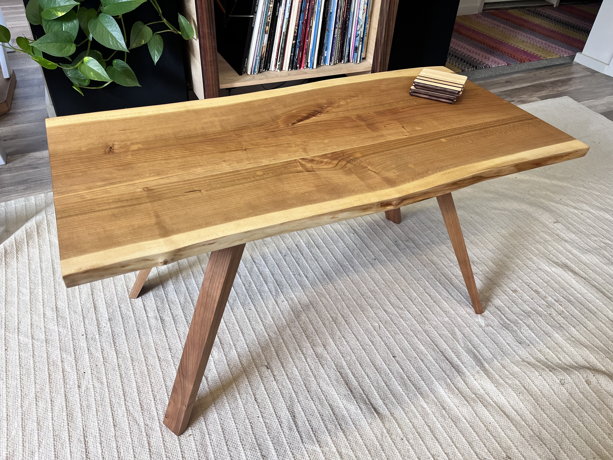

Coffee Table
Overview
In the past, I had built a live edge shelf from aromatic cedar, which features a rich, warm colored grain and a light sap wood. I wanted to recreate this look for our coffee table, but being that cedar is very soft, it wasn't suitable for the tabletop. I decided to use cherry wood which features similar colors in it's heart and sap wood. The live edges came from a slab that had a large crack down the center. I opted to patch it with a central strip from a different part of the slab as opposed to stabalizing it with epoxy. I prefer the natural look of wood over epoxy. The legs are also made from cherry and feature a slight taper to give the table a lighter feel. The table was made as light as possible as we have a small living room and wanted it to be easily movable for different arrangements. It is finished with a natural hard wax made in house from beeswax.
